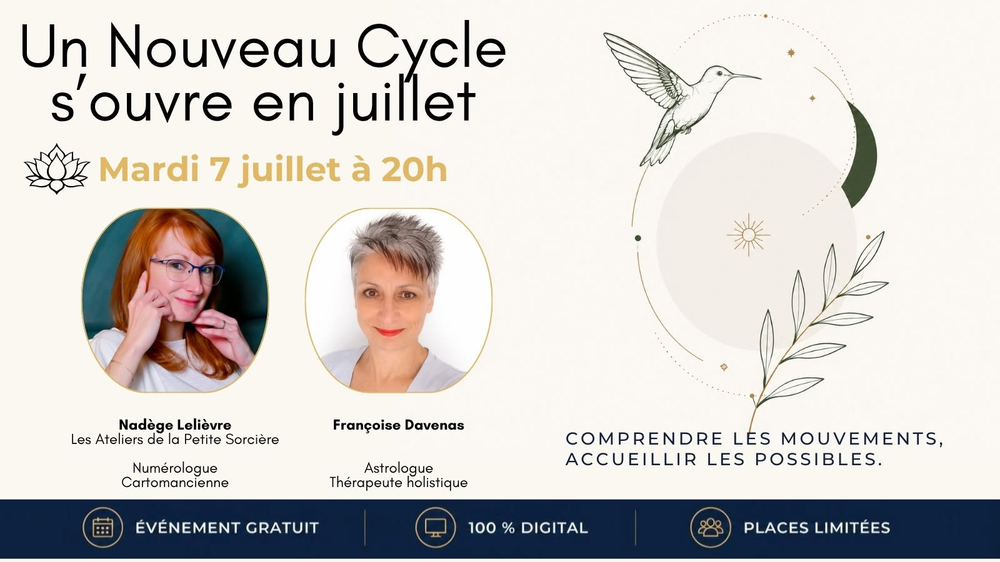

Des expériences collectives puissantes pour avancer ensemble
Quand les Astres révèlent l’âme…
L’astrologie, la boussole de l’âme
Je vous retrouve en salon pour vous faire découvrir une approche de l’astrologie profonde, révélatrice et évolutive.
Une invitation à prendre du recul, à mieux comprendre les cycles que vous traversez, à poser un regard nouveau sur votre parcours et à ouvrir de nouvelles perspectives.
L’astrologie devient une boussole intérieure, au fil d’un parcours AstroPsycho qui vous invite à mieux vous connaître, à donner du sens à votre histoire et à révéler votre potentiel.
Au plaisir de vous rencontrer.
Salon Bien-Être et Habitat Sain — Espace Tully (74) Thonon-les-Bains
Date : 19 & 20 septembre 2026
Voir le salonSalon Bien-Être et Habitat Sain — Casino Grand Cercle, Salle Victoria (73) Aix-les-Bains
Date : 17 & 18 octobre 2026
Voir le salonJuillet 2026 – Mars 2028 : un nouveau cycle s'ouvre.
C'est une invitation à réaligner votre chemin de vie, à mieux comprendre les expériences qui vous attendent et à accueillir les transformations profondes qui se présentent.
Au cours de cet événement digital, nous abordons la symbolique de ce nouveau passage des Nœuds Lunaires et ses enjeux collectifs : que nous propose-t-il d'expérimenter ? Quel appel pour notre âme ? Quels défis et quelles opportunités ce nouvel axe ouvre-t-il pour notre société, pour le monde dans lequel nous évoluons ?
Envie d'en connaître les enjeux ? Un temps de découverte, de compréhension et de conscience pour aborder cette période avec davantage de clarté et de confiance.
Thème
Le nouveau cycle des Nœuds Lunaires — juillet 2026 à mars 2028. Un événement en ligne pour décrypter ensemble les messages de ce cycle et en faire un levier d'évolution, de transformation et de libération.

Le webinaire passé
Mardi 7 juillet, 20h — « Un nouveau cycle s'ouvre en juillet »
En collaboration avec Nadège Lelièvre (Les Ateliers de la Petite Sorcière — Numérologue, Cartomancienne), pour comprendre les mouvements de ce nouvel axe et accueillir les possibles qu'il ouvre.
Voir la vidéo d'annoncePrêt(e) à vivre une expérience collective transformatrice ?
Réserver ma place